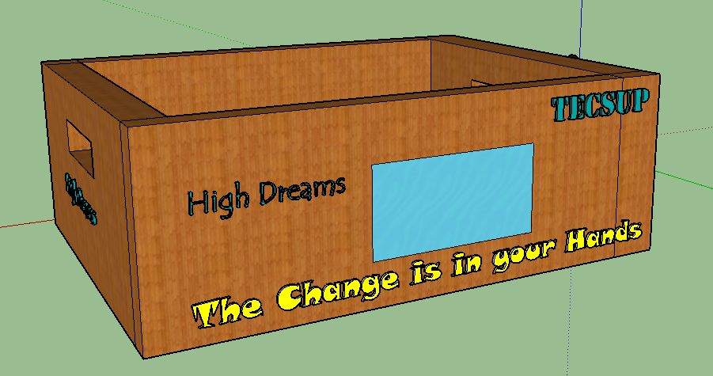

Language: English
Implementacion y Funcionamiento al 50%
En el presente video damos a conocer la programacion en arduino para hacer funcionar nuestra cortadora laser , el cual ayudara a los movimientos en motor Y y motor X , Arduino es una plataforma de hardware libre, basada en una placa con un microcontrolador y un entorno de desarrollo, diseñada para facilitar el uso de la electrónica en proyectos multidisciplinares, por otra parte tambien se muestra el montaje del circuito ya ensamblado de forma física basándonos en el prototipo inicial (revisar bosquejo).
Documento - Implementación al 50%
Correspondiente a dicha semana y basándonos en el diagrama de Gant , en esta parte el proyecto del Sistema de seguridad desde una aplicación móvil se comenzó a montar las conexiones según el diagrama ya mostrado anteriormente, así como también desarrollar el código en arduino para enviar los pulsos al motor.
Implementación - Documento al 50%